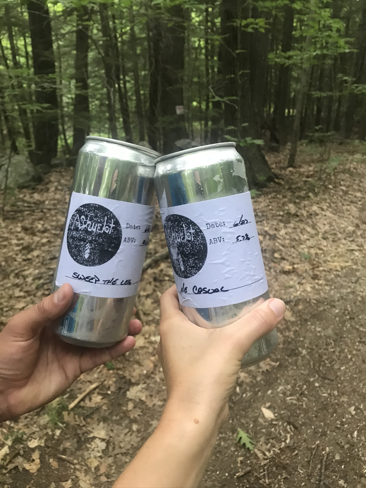
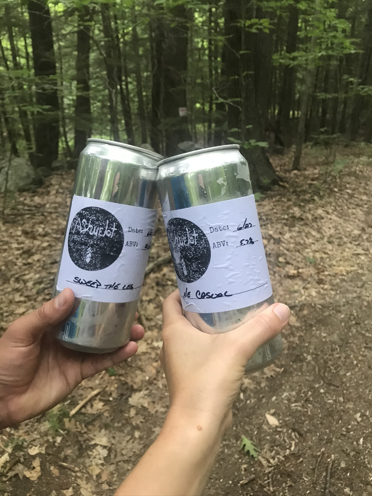

Distance
Distance Elevation
Elevation Observed Wildlife
Observed WildlifeThis is a nice easy day hike where the real attraction is the waterfall and the ability to take a dip. It includes some nice vistas of Berkshire hills at the beginning.


This hike was a bit of an oops. However it was an oops that ended with a few unexpected and delicious beers. I was intending to hike with my partner over Little Monadnock and through Rhododendron State Park. However some unclear trail markings and questionable navigating on my end led us astray. The all trails map above is an approximation of our hike. In summary we ended up hiking along the Metacomet-Monadnock Trail, but in the wrong direction.
The hike brought us to the edges of a couple very lovely bogs (or swamps). We saw lots of evidence of beaver activity on the trees, but no beavers. We also we dazzled by the acrobats of some waxwings (or… ) catching a sample of the vast insect population. We were treated to a flying blue herring up close and in addition to its large nest in which its partner stood upon.


We ended up hiking along a few dirt roads and eventually discovered we had gone the wrong way. Part of that determination was by finding a sign for Ashuelot Brewery. We then took out our phones and discovered we were lucky to have a road/trail lead us 3 miles directly to our car. So we did the only sensible thing there was to do. We bought a couple cans of beer and cracked them open along the way to our car. Another unexpected surprise was that the cans turned out to be crowler sized and the beers lasted us the whole walk back. I did the honorable thing and drank much of my partners beer so that they could safely drive us home.
 

We plan to return another time in the height of the rhododendron flowering sometime in mid July in the future.